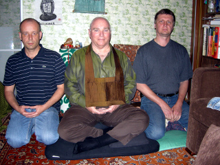

Практика | учение | история | книга | ссылки.
Регулярная практика дзадзэн
Дайосё (великий японский мастер Дзэн) Догэн в 1242 году сказал: «На великом пути патриархов всегда есть высшая практика, непрерывная и неуклонная. Она образует круг пути и никогда не отбрасывается. Между изначальной устремлённостью, практикой, пробуждением и нирваной не существует даже мгновенного пробела; непрерывная практика есть круг пути. А раз так, непрерывная практика чиста и незапятнана, никто не в состоянии повлиять на неё. Сила непрерывной практики укрепляет как вас, так и всех остальных. Это означает, что практика ваша влияет на всю землю и всё небо в десяти направлениях. И вы сами, и остальные можете не замечать этого, но это всё равно так.» (Догэн. Пер. с англ. Котенко Р.В. — СПб.: Изд. группа «Евразия», 2001. Стр. 159)
Непрерывная практика Московского центра Дзэн проходит по адресу ул. Краснобогатырская, дом 27, кв. 106 (трамвай от ст.м. «Преображенская площадь») по средам, 18:30-20:30 (приходить в 18:15). Если вы впервые идёте на практику Сото Дзэн, или после долгого перерыва, лучше заранее позвонить по телефону